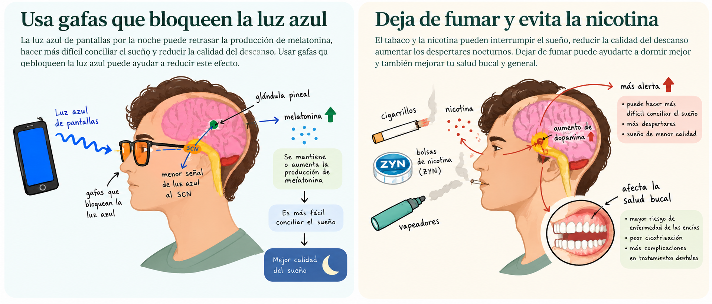

¿Cómo podemos mejorar nuestro sueño?
Pequeños cambios en nuestros hábitos diarios pueden ayudarnos a dormir mejor.
Hábitos para un sueño saludable
Mantener horarios regulares para acostarse y despertarse puede ayudar a sincronizar nuestro reloj biológico.
Recibir luz natural durante el día, limitar la cafeína cerca de la hora de dormir y mantener un ambiente oscuro, tranquilo y cómodo durante la noche también puede favorecer el descanso.
Técnicas de respiración para relajarse
Las técnicas de respiración pueden ayudarnos a relajarnos y reducir la tensión antes de dormir. Dedicar unos minutos a respirar lentamente puede ser una forma sencilla de preparar el cuerpo y la mente para el descanso.
Aprende técnicas sencillas de respiración que puedes incorporar a tu rutina nocturna.
Otras estrategias para mejorar tu sueño
La exposición a la luz durante la noche y el consumo de nicotina pueden afectar nuestro descanso. Conoce cómo estos factores influyen en el sueño y qué puedes hacer para mejorar tus hábitos.

Recursos gratuitos para dejar el tabaco y la nicotina
Si consumes cigarrillos, vapeadores o bolsas de nicotina como ZYN, existen recursos que pueden ayudarte a dejar su consumo.
¿Prefieres hablar con alguien? Llama al 1-800-QUIT-NOW (1-800-784-8669) para obtener información sobre servicios gratuitos para dejar el tabaco. Puedes solicitar atención en español.
La nicotina es adictiva. Algunos tratamientos para dejar de fumar incluyen medicamentos o productos de reemplazo de nicotina. Consulta con un profesional de salud para conocer las opciones adecuadas para ti.